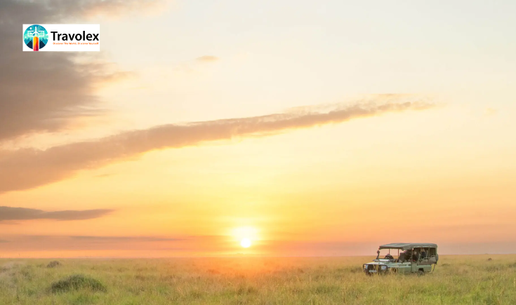

24th May
Craving a journey into the heart of the African wilderness? Look no further than the Masai Mara National Reserve in Kenya — one of the world’s most iconic
safari destinations
. Famous for the Great Migration, big cat sightings, and breathtaking landscapes, the Mara offers an unforgettable wildlife experience. With Travolex’s 6-dayall-inclusive Masai Mara travel package
, you’ll explore nature at its rawest while enjoying the comfort of expertly curated accommodations and guided adventures.Day 1: Arrival in Nairobi – Gateway to the Wild
Your journey begins in Nairobi, Kenya’s vibrant capital. Upon arrival at Jomo Kenyatta International Airport, a Travolex representative will welcome you and transfer you to a charming boutique hotel for an overnight stay. Enjoy a welcome dinner, a safari briefing, and prepare for the adventure ahead.Day 2: Scenic Drive to Masai Mara – Into the Wild
After breakfast, embark on a scenic drive through the Great Rift Valley en route to Masai Mara National Reserve. As the landscape transforms from rolling hills to open savannah, you’ll begin to feel the call of the wild. Upon arrival, check into your luxury tented camp and enjoy your first afternoon game drive, where you may spot elephants, giraffes, wildebeests, and even lions before sunset.Day 3: Full-Day Game Drive – Big Five Safari
Day 4: Optional Hot Air Balloon Safari & Cultural Visit
Rise early for an optional hot air balloon safari (extra cost), offering a bird’s eye view of the Mara at sunrise—an experience of a lifetime. Afterward, visit a traditional Maasai village to learn about the tribe’s ancient customs, colorful attire, and rhythmic dance rituals. Return to camp for lunch and a relaxing afternoon, or take a sunset nature walk guided by a local tracker.Day 5: Morning Safari & Relaxation
Enjoy a peaceful early morning game drive when animals are most active, followed by breakfast back at the lodge. Spend your final full day at leisure—read a book on the deck, soak in the views, or take advantage of your camp’s amenities. Later, a farewell bush dinner under the African sky will cap off your safari experience in style.Day 6: Return to Nairobi – Departure
After breakfast, bid farewell to the Mara as you drive or fly back to Nairobi. Upon arrival, enjoy lunch at a local restaurant and, if time permits, a short visit to the Giraffe Centre or Kazuri Bead Factory before your transfer to the airport for your international flight.Why Choose Travolex?
With Travolex, you don’t just go on a safari — you embark on a curated adventure crafted for comfort, safety, and awe-inspiring memories. Our local partnerships, seasoned guides, and commitment to quality ensure that yourMasai Mara safari
exceeds expectations, whether you're a first-time traveler or a seasoned explorer.Conclusion
A safari in the Masai Mara is more than a trip—it’s a profound connection to nature. From thundering hooves during the migration to the stillness of a lion at dawn, this is a journey that stays with you forever. Let Travolex take you there with ease, comfort, and unforgettable experiences.Ready to answer the call of the wild? Book your Masai
Mara Safari Tour Package
with Travolex today and make your dream African adventure a reality.